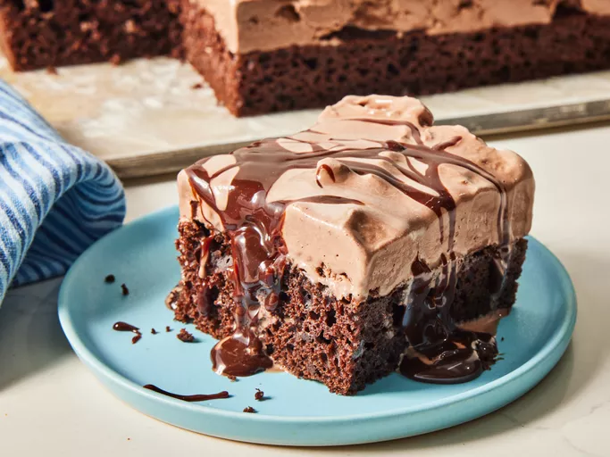

HOME
Guinness Corned Beef

Description:
This Guinness corned beef with brown sugar is perfect for a St. Patrick's Day feast. I discovered it while attending an Irish Rovers concert. My family and friends insist it is a staple at get-togethers any time of the year. Braise this corned beef slowly at a low setting for melt-in-your-mouth delight. The aroma is fantastic!
Ingredients:
- 4 pounds corned beef brisket
- 1 cup brown sugar
- 1 (12 fluid ounce) can or bottle Irish stout beer (e.g. Guinness)
Steps:
- Gather all ingredients. Preheat the oven to 300 degrees F (150 degrees C).
- Rinse brisket thoroughly, then pat dry with paper towels and place on a rack in a roasting pan or Dutch oven. Rub brown sugar all over brisket.
- Pour beer around and gently over brisket to wet sugar.
- Bake, covered, in the preheated oven until tender, about 2 ½ hours. An instant-read thermometer inserted into the center of brisket should read at least 190 degrees F (88 degrees C).
- Allow to rest for 5 minutes before slicing.
- Enjoy!